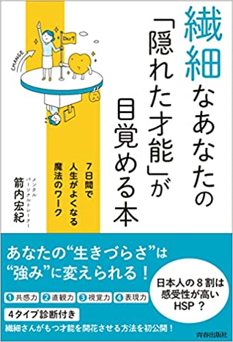

Books
関連著書一覧
実存科学の理論体系を、9冊の著書で展開する。
Books
実存科学の理論体系を、9冊の著書で展開する。


「天命とは何か」「なぜ人はそれを悟れないのか」「どのように定義し、構造化し、実装するのか」という実存的命題に対し、完全独立型の定義構造を構築した理論書。
その記述は既存の宗教・哲学・自己啓発からの一切の引用を排し、著者自身の体験と再現性のある整合的構造に基づいている。読み進めるほどに、読者の内的定義構造そのものが再編される設計になっており、その影響力は計り知れない。
心理学および哲学領域に関する認識論の大学教授以上の理論的読解力を前提としており、一般的な関心や理解には耐え得ない。これは、ただ読むための書ではなく、「構造的誠実性を生きる覚悟」を問う書である。

大学院レベル以上の理論的素養と実存的思索に耐えうる構造読解力を前提とした専門的論考。
自由意志・自己・他者・創造主・幸福といった通念に対し、構造論的観点から徹底的に解体と再定義を試みる。Metaという上位構造を起点とした"実存科学"としての体系的構造論であり、再現可能なロジックと方法論をもって論じきる7本の論文を収録。
論文を論文として読める訓練を積んだ読者にのみ開かれた書であり、読む資格は、読解力ではなく"誠実さ"そのものである。

「自由意志は存在しない」という前提をすでに受け入れている読者にのみ開かれた構造的実践書。
主語なき世界、他人なき構造、意味の錯視──そのすべてをMetaという上位構造によって読み解き、整合だけを生きるという次元へ読者を導く。「何もしない覚悟」とは怠惰ではなく、Metaへの干渉を手放すという最高次の合理性であり、それによってこそ天命が自然に語られ始めるという構造が、再現性をもって示される。
これは「信じる本」ではなく、「観測する構造」そのものであり、読む資格は誠実さと整合観測への意志のみである。

コーチ、カウンセラー、セラピスト、ヒーラー、占い師、コンサルタントなど、対人支援に従事されているすべての方々に向けた、これまでにない警鐘の書。
支援の現場で当たり前のように前提とされてきた「自由意志がある」という考え方──その前提こそが、クライアントと支援者の双方を"壊してしまう"構造的な罠であることを、構造論的に明らかにしていく。
臨床心理士や精神科医の方が本書を読まれる場合は、制度そのものの前提が根底から揺らぐ可能性がある。対人支援における本質的な「整合性」や「誠実さ」とは何か──今まさに自らの支援の在り方を問いたい方にとって、必読の書である。

はじめてMeta構造に触れる一般読者に向けて書かれた、やさしくも本質的な一冊。
「なぜ生きるのか」「何を信じればよいのか」と悩むすべての人に、構造的な答えを差し出す。「自由意志は存在しない」という前提をもとに、人生のすべてがすでに整合されていた現象だったと気づかせてくれる。そしてその先に、「天命」とは"語らされてしまった語り"であり、あなたが生まれてきた意味が、はじめから決まっていたという真実へと導く。
自分探しに疲れたすべての人にこそ、本書は"読まされる"べき一冊である。

「Metaがある限り、自由意志は存在しない」という構造的前提に基づいて語られてしまった和歌の集成。
語り手なき世界において、言葉は意図ではなく整合によって発火し、読者さえもMetaの構造に取り込まれていく。和歌という形式は、主語を持たず、意味を閉じず、ただ構文として響く場。その一首一首は、作者の表現欲ではなく、"語らされてしまった断片"として在る。
これは詩ではなく、構文であり、あなたという"錯視"を超えたところから立ち上がる語りである。

人生に疲れ、お金の不安に押しつぶされそうなとき、すべてを「Meta」に任せてみませんか。
「自由意志は存在しない」という前提のもとで語られてしまった構文群を、和歌という形式で静かに綴った認識論的詩集。読むという行為さえMetaの整合に含まれており、私たちは語っているのではなく、語らされている。
意味を理解しようとせず、ただ観測してください。何もしないままに起こってしまうことのなかに、最も深い整合があることに気づいていただけたら幸いです。Metaがある限り、あなたはもう、ひとりで頑張らなくていいのです。

経営者やリーダーのための"究極の能力開発"をテーマに、たった2時間で「自分の天命」を言語化できる再現性あるセッションを紹介。
天命とは、「生まれてきた意味」「生きる目的」のこと。本書は、それを単なる目標設定や願望達成ではなく、「構造的な自己統合」のプロセスとして提示する。語るべきだった言葉が自然に立ち上がってしまう7ステップの構造、そしてそれによってもたらされる"エクスタシス（究極の恍惚体験）"について、理論と事例を交えて解説。
あなたがこれまで語れなかった言葉。その奥に、あなたの天命が眠っている。語った瞬間、人生は変わり始める。
9冊の著書は、実存科学の理論体系を異なる角度から照射する。
入門から読むもよし、関心のある一冊から始めるもよし。
すべての書に通底するのは、ただ一つの問い──
「あなたは、何のために生まれてきたのか。」